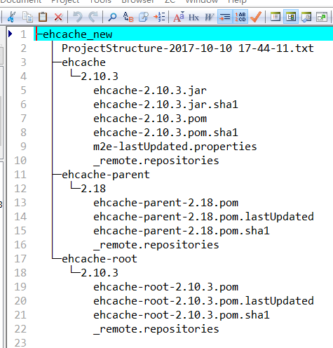
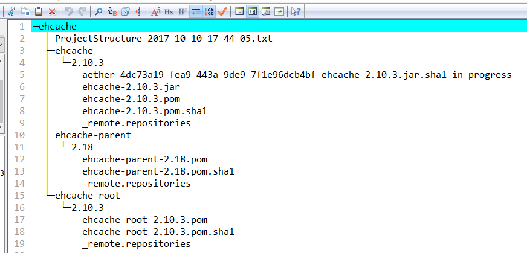

To fix issues like that, let Maven download the files again:
That should try to download the file again and clean up any "residue" in your local repository. If Eclipse still complains that the JAR file is corrupt:
If the JAR file is corrupt, delete the folder again and run Maven once more. Note the URLs which Maven used to download the archive and contact the administrator of that site. |
 |
 |